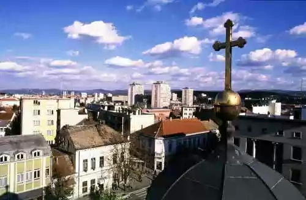

SRBIJA
Kragujevac je privredni, kulturno-prosvetni, zdravstveni i politički centar Šumadije i Pomoravlja i susednih regiona. Sa preko 180.000 stanovnika
četvrti je grad u Srbiji. Nalazi se u srcu Šumadije i Srbije i prostire se na površini od 835 km2, sa 57 naseljenih mesta i 78 mesnih zajednica.
Podignut je na obalama Lepenice u Kragujevačkoj kotlini, gde se dotiču krajnji ogranci šumadijskih planina: Rudnika, Crnog Vrha i Gledićkih planina.

Nalazi se na prosečnoj nadmorskoj visini od 180 m, u oblasti je umereno-kontinentalne klime. Šumadiju karakteriše brežuljkasto-brdovito zemljište,
blago zatalasano i pitomo. Ovo područje je dobilo ime jer je nekada bilo prebogato šumama, koje danas zauzimaju 1/4 ukupne površine.
Prvi put se pominje 1476. godine, kao malo naselje sa 32 kuće. Kragujevac je podignut na obalama Lepenice, na obroncima planina Rudnik, Crnog vrha i
Gledićkih planina. Za izbor mesta pri osnivanju naselja od velikog uticaja bili su brojni vodotoci, jer kroz uže gradsko područje teče reka Lepenica i
nalaze se ušća njenih pritoka. Dolinama pritoka Lepenice u prošlosti su prolazili putevi koji su povezivali Gružu, Lepenicu i Rudnik sa Pomoravljem.
Kada je knez Miloš Obrenović obnovio srpsku državu, oslobodivši je od Turaka, 1818. proglasio je Kragujevac za prestonicu. Već 1822. Kragujevac je
imao 283 kuće i 2000 stanovnika. Poseban značaj Kragujevac je dobio osnivanjem Topolivnice, koja je kasnije prerasla u Vojnotehnički zavod (preteča
„Crvene zastave“). Po mnogo čemu Kragujevac nosi epitet „prvi u Srbiji“: prva prestonica (1818), prvi sud – „Serbska kancelarija“ (1820), prva
gimnazija (1833), prvo pozorište – „Knjaževsko-serbski teatar“ (1835), prvi univerzitet – „Licej“ (1838), prvi izliveni topovi (1853), prva električna
centrala (1884). U Kragujevcu se nalaze institucije od regionalnog i nacionalnog značaja, a više njih nastavlja tradiciju prvih ustanova svoje vrste
u Srbiji: Teatar „Joakim Vujić“ (1835), Narodna biblioteka „Vuk Karadžić“ (1866), Kulturno-umetničko društvo „Abrašević“ (1904).
Narodni muzej u Kragujevcu ima odeljenja za arheologiju (sa preko 100.000 predmeta), likovnu umetnost (sa oko 1000 umetničkih dela), etnografiju i
istoriju Kragujevca i Šumadije. Muzej „Stara livnica“ prezentuje vek i po razvoja industrije u Kragujevcu i Srbiji. Od brojnih kulturno-istorijskih
spomenika u Kragujevcu posebno se ističu Stara crkva iz 1818. godine, zadužbina kneza Miloša Obrenovića, zgrada Skupštine kneževine Srbije, kompleks
dvora kneza Miloša, zgrada Suda, Amidžin konak, Prva gimnazija, Spomen-park „Kragujevački oktobar“ i drugi.
U Kragujevcu se organizuje više kulturnih manifestacija, od kojih su najznačajnije Oktoh, Međunarodni sajam antiratne karikature, Međunarodni festival
kamernih horova, Smotra folklora, Džez fest, Susreti pozorišta Srbije „Joakim fest“ i druge.
Posebnu atrakciju predstavlja „Akvarijum Kragujevac“, prvi slatkovodni akvarijum u našoj zemlji, koji se nalazi na Prirodno-matematičkom fakultetu.
Na preko 200 m2 izloženo je više od 250 akvarijuma u kojima je izložen živi svet kopnenih voda Balkana i tropskih i suptropskih područja.